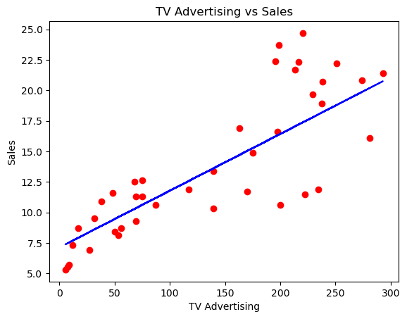
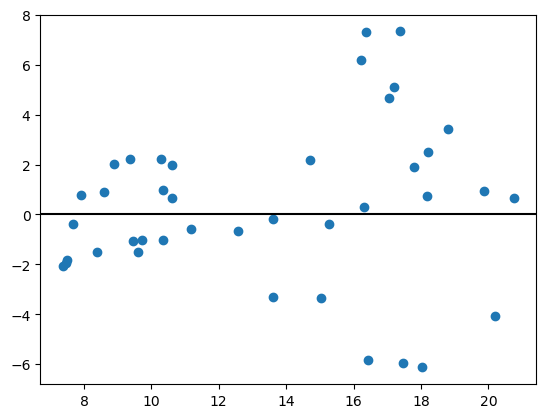
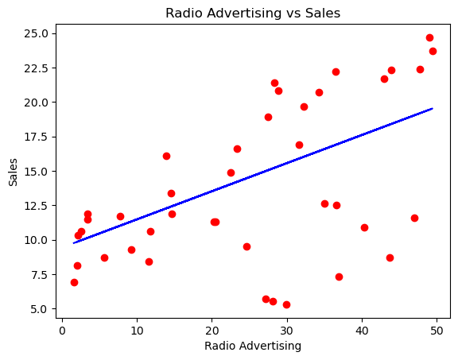
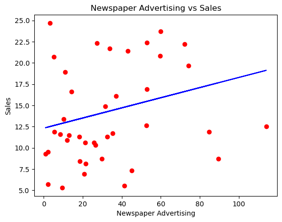

Advertising: simple linear regression
Rendered notebook · Download .ipynb · Project README · All ML exercises
Question
Which single advertising channel (TV, radio or newspaper) best explains product sales, fitting one simple linear regression per channel?
Answer (from Sergio’s README): TV. It explains about two-thirds of the variation in sales on the test set; radio has a bigger slope but explains about 26%, and newspaper about 3%. The README recommends TV as the most reliable channel and testing TV and radio together next, and notes that the relationship alone doesn’t prove TV ads cause the extra sales.
Data
Advertising.csv from An Introduction to Statistical Learning (ISLR): 200 markets with TV, radio and newspaper budgets and sales. The local file is byte-identical to the ISLR download. The notebook loads it into a local PostgreSQL table advertising and logs each model’s metrics to a model_results table. The CSV is not included in this repository.
Database: the published notebooks connect with postgresql+psycopg2://postgres@localhost:5432/postgres. The local login is read from ~/.pgpass and is not in this repository. The original connection string was edited for publishing; nothing else in the notebook was changed except local file paths in warning messages.
Methods and tools
Python, pandas, NumPy, scikit-learn, PostgreSQL, SQLAlchemy, matplotlib
- One
LinearRegressionper channel: sales ~ TV, sales ~ radio, sales ~ newspaper. - 80/20 train/test split (
random_state=42); RMSE, R² and MAE on the test set. - Scatter, fitted line and residual plot for each channel; metrics logged to Postgres and read back with SQL.
Results (test set)
| Channel | Slope | Intercept | R² | RMSE | MAE |
|---|---|---|---|---|---|
| TV | 0.0465 | 7.120 | 0.677 | 3.194 | 2.444 |
| Radio | 0.2044 | 9.424 | 0.263 | 4.822 | 3.930 |
| Newspaper | 0.0598 | 12.311 | 0.030 | 5.534 | 4.782 |
Values rounded from the notebook output and the model_results query at the end of the notebook. Sales are in the dataset’s units (Sergio’s README reads the TV slope as about 47 extra units per $1,000 of TV spend and the TV RMSE as about 3,200 units).
Key findings
- TV has the best fit: R² 0.677, RMSE 3.19, MAE 2.44.
- Radio has the largest slope (0.204 vs 0.047 for TV) but a much weaker fit: R² 0.263, RMSE 4.82.
- Newspaper explains almost nothing: R² 0.030, RMSE 5.53.
Charts




Notebook
TV_slr_model (rendered) · TV_slr_model.ipynb. 30 code cells (24 with outputs, 9 charts), 4 markdown cells.
The notebook was run out of order (execution counts range from 27 to 141), so cells show results from different moments of one session. One cell drops and recreates the model_results table.